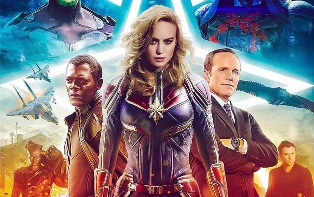

漫威精选微电影
-
钢铁侠3
 《钢铁侠3》一部由沙恩·布莱克执导，小罗伯特·唐尼、格温妮丝·帕特洛、盖·皮尔斯等主演的动作、冒险、科幻类型的电影，于2013年5月1日在中国上映。影片讲述了托尼·斯塔克的生活被强敌毁灭殆尽，无路可退的他必须依靠精良的高科技装备以及过人才智，保护自己和身边最亲近的人，同时揪出真正的幕后元凶的故事。
《钢铁侠3》一部由沙恩·布莱克执导，小罗伯特·唐尼、格温妮丝·帕特洛、盖·皮尔斯等主演的动作、冒险、科幻类型的电影，于2013年5月1日在中国上映。影片讲述了托尼·斯塔克的生活被强敌毁灭殆尽，无路可退的他必须依靠精良的高科技装备以及过人才智，保护自己和身边最亲近的人，同时揪出真正的幕后元凶的故事。 -
美国队长3
《美国队长3：内战》是由安东尼·罗素、乔·罗素兄弟联合执导，克里斯·埃文斯、小罗伯特·唐尼、斯嘉丽·约翰逊等主演的动作片。该片于2016年5月6日在中国上映。该片讲述了奥创事件后引发的一系列政治问题导致复仇者之间内部矛盾激化的故事。2017年，Steve Rawlins和Stephen King凭借该片获得第44届安妮奖最佳真人电影角色提名。 -
雷神3
纽约大战后，雷神索尔将弟弟洛基带回仙宫囚禁起来，此外帮助九大国度平定纷争，威名扶摇直上。虽然父王奥丁劝其及早即位，但索尔念念不忘地球的美丽女孩简·福斯特与此同时，简在和黛西及其助手伊安调查某个区域时意外被神秘物质入侵，却也因此重逢索尔，并随其返回仙宫。令人意想不到的是，藏在简体内的物质来自远古的黑暗精灵玛勒基斯。在“天体汇聚”的时刻再次到来之际，玛勒基斯企图摧毁九大国度，缔造一个全然黑暗的宇宙。?藏匿简的仙宫受到重创，而索尔和洛基这对冤家兄弟也不得不联手迎战宿命的强敌…… -
超凡蜘蛛侠2
能力越大，责任越大。蜘蛛侠彼得·帕克，在全力和犯罪、灾难做斗争的同时，终于迎来了毕业的时刻。可是曾经的一段心结，让他和女友格温·斯坦西的关系降至冰点。格温应聘于为全城提供电力的 奥斯本集团公司，同一期间发生的两件事，不由得左右这家公司和彼得等人的命运。奥斯本的掌门人病故，他的儿子哈利以20岁的年龄接受这家市值2000亿美元的巨无霸。另一方面，极度崇拜蜘蛛侠的电力工程师麦克斯·威尔·迪伦在维修机组时意外身亡，当他再度醒来时发现自己变成了全身充满电能的超人类。 感到受了欺骗的麦克斯与蜘蛛侠在时代广场展开对决，而彼得和哈利的友情也将遭到命运的戏弄…… -

惊奇队长
在围剿斯克鲁人的战斗中，克里人星际战队成员弗斯不幸成为对方的俘虏。斯克鲁人尝试探究弗斯的记忆，最终发现连弗斯本人都不知道的一段往事，进而也得知名为温迪劳森博士的女子掌握着他们急于得到的时空引擎。趁对方不备，拥有强大超能力的弗斯摆脱束缚，逃到了代号为C-53的地球，而这里也正是她那段失落的记忆的发生地。未过多久，神盾局探员弗瑞特工找上门来，而紧随其后的斯克鲁人更是引发了地球人前所未见的大骚动。 在这一过程中，弗瑞特工意识到事态的严重性，并且帮助弗斯认清本来的自己。倔强的弗斯，终于找到了真正需要保护的东西…… -

钢铁侠2
钢铁侠托尼·斯塔克在国会听证上拒绝交出最新技术。与此同时，他发现胸口的微型电弧反应炉正迅速造成血液的钯金属中毒。沮丧的托尼将斯塔克公司的总裁职务交予了秘书波兹，由她全权负责正在进行的纽约斯塔克博览会。波兹从法律部门调来助理娜塔莉照顾托尼。托尼在媒体前的高调亮相引起了其父当年同事的儿子，伊凡的不满。为了实施报复，他子承父业，研制出了一套可与钢铁战衣相媲美的装备。伊凡的技术引起了托尼的竞争对手，军火商贾斯丁·汉默的注意，他设法将伊凡劫持出狱，秘密研究取代钢铁侠。正当托尼苦于钯金属中毒造成的失...